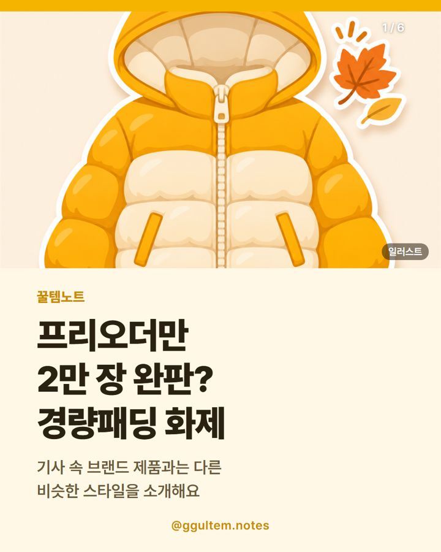

경량패딩 추천 고르는 법 — 후드 숏패딩 비슷한 스타일 소개
2026.11.09 작성 · 2026.11.10 수정 · 꿀템노트
경량패딩은 충전재와 혼용률, 기장과 핏, 세탁 표기를 비교해 고르세요. 이 글의 상품은 기사 속 브랜드 제품이 아닌 비슷한 스타일이에요.

이미지는 이해를 돕기 위한 일러스트이며 실제 상품과 다를 수 있어요.
비슷한 스타일: 아래 상품은 기사 속 제품과 같은 제품이 아니에요.
왜 화제가 됐을까
스포츠경향 기사에 따르면 패션 브랜드 세컨드 솔트의 경량패딩이 프리오더만으로 2만 장 완판됐고, 무신사 협업 컬렉션이 발매 직후 실시간 랭킹 1~10위를 차지했다고 해요. 기사는 아이브 멤버 가을이 이 브랜드 아이템을 착용한 것으로 알려지며 화제가 됐다고 전했어요.
이 수치와 설명은 브랜드 운영사 측 설명을 중심으로 한 기사 내용이에요. 이 글에서 소개하는 옌츠 제품은 기사 속 브랜드 제품이 아닌 비슷한 스타일의 다른 상품이며, 기사 속 인물이 이 상품을 추천하거나 협찬한 것이 아닙니다.
경량패딩 추천 기준, 무엇을 볼까?
| 확인 항목 | 어디서 볼까 | 참고 |
|---|---|---|
| 충전재와 혼용률 | 상품 페이지의 소재 표기 | 충전재 종류와 소재 비율을 확인하세요. |
| 기장과 핏 | 사이즈표 | 안에 니트나 맨투맨을 껴입을 여유가 있는지 비교하세요. |
| 세탁과 보관 | 세탁 라벨 안내 | 시즌이 끝난 뒤 관리 방법을 미리 알 수 있어요. |
경량패딩은 언제부터 입을 수 있을까?
입기 좋은 기온은 충전재 양, 안에 입는 옷, 개인의 체감에 따라 달라서 정해진 온도를 말하기 어려워요. 가을에는 단독 겉옷으로, 더 추워지면 코트나 점퍼 안에 겹쳐 입는 방식이 흔하다고 알려져 있어요. 제품 안내에 표기된 소재와 두께를 기준으로 판단하세요.
경량패딩 세탁은 어떻게 할까?
세탁 방법은 제품마다 달라요. 물세탁 가능 여부, 세탁기 사용 가능 여부는 제품에 붙은 세탁 라벨을 기준으로 하세요. 구매 전에 상품 페이지에 세탁 표기가 있는지 보는 것도 좋아요.
기사 속 브랜드 제품과 같은 상품인가요?
아니에요. 기사에 나온 것은 세컨드 솔트 브랜드의 제품이고, 이 글의 옌츠 여성 경량패딩 후드 숏패딩은 같은 제품이 아니에요. 상품명에 표기된 후드와 숏 기장이 비슷하다는 점에서 비슷한 스타일로 소개한 다른 상품이에요.
가격·단가 비교
표의 가격은 2026.11.09 기준이며 변동 가능해요. 가격과 재고는 쿠팡 상품 페이지에서 다시 확인하세요.
| 항목 | 이 글의 상품(옌츠 26CY524) | 다른 유형 ①: 기장이 더 긴 경량패딩 | 다른 유형 ②: 후드 없는 경량패딩 |
|---|---|---|---|
| 게시일 기준 가격 | 29,860원 (2026.11.09 기준, 변동 가능) | 상품 페이지에서 확인 | 상품 페이지에서 확인 |
| 단가 | 수량 1벌 상품이라 별도 단가 없음. 사이즈별 가격 차이는 확인하지 못했어요. | - | - |
| 상품명 표기 특징 | 여성용, 경량패딩, 후드, 숏 기장 | 롱·미디 기장 표기 | 후드 없음 표기 |
| 확인할 점 | 사이즈표, 충전재·혼용률, 세탁 표기 | 기장 표기와 사이즈표 | 목 부분 디자인과 사이즈표 |
보온 성능은 표기와 무관하게 개인차가 커요. 다른 유형은 링크를 따로 두지 않았고, 상품 페이지의 표기로 비교하면 돼요.
이런 분께 / 이런 분은 다른 선택
상품명과 표기 사양만 보고 정리했어요. 직접 사용한 경험이 아니며 효과를 보증하지 않아요.
- 이런 분께: 후드가 있는 숏 기장 경량패딩을 찾는 분
- 이런 분께: 29,860원 안팎 가격대를 비교하는 분
- 다른 선택: 기사 속 세컨드 솔트 제품 그 자체를 원하는 분(이 상품은 다른 제품이에요)
- 다른 선택: 롱 기장이나 후드 없는 디자인을 찾는 분
- 다른 선택: 보온 정도를 수치로 확인해야 하는 분
함께 보면 좋은 글: 와플 헨리넥 긴팔 추천 · 고르는 법 · 털신발 여성 추천 · 슬립온 고르는 법 · 방한커튼 설치 방법 · 고르는 법
비슷한 스타일로 소개하는 상품
옌츠 여성 경량패딩 겨울 후드 숏패딩 26CY524
상품명에 표기된 특징은 여성용, 경량패딩, 후드, 숏 기장이에요. 보온 성능을 보증하는 내용은 아니에요.
자주 묻는 질문
경량패딩 추천 기준은 뭔가요?
충전재와 혼용률, 기장과 핏, 세탁 표기를 비교하세요. 이 글의 제품은 상품명에 표기된 특징을 소개한 것이며 보온 성능 보증이 아니에요.
경량패딩은 언제부터 입나요?
기온, 안에 입는 옷, 개인 체감에 따라 달라서 정해진 시기를 말하기 어려워요. 제품의 소재와 두께 표기를 참고하세요.
경량패딩 세탁은 어떻게 하나요?
제품에 붙은 세탁 라벨의 방법을 따르세요. 세탁기 사용 가능 여부도 라벨 기준으로 확인하는 것이 안전해요.
이 상품은 기사에 나온 경량패딩과 같은 제품인가요?
아니에요. 기사 속 브랜드 제품이 아닌 비슷한 스타일의 다른 상품이며, 기사 속 인물이 추천하거나 협찬한 상품도 아니에요.
관련 글
카테고리 모음: 겨울 신발 추천 · 겨울 패션·신발 글 모음